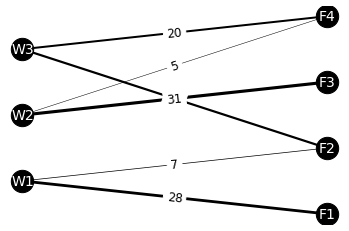
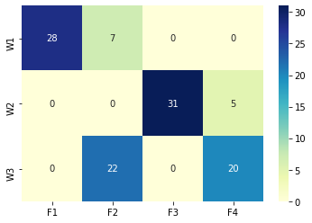
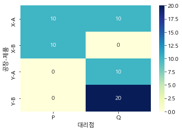
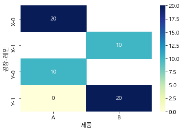

물류 최적화
Table of contents
운송 경로 최적화
# 필요한 library를 import
import numpy as np
import pandas as pd
from itertools import product
from pulp import LpVariable, lpSum, value
from ortoolpy import model_min, addvars, addvals
- itertools: 효율적인 반복을 위한 함수. - ex)
itertools.product(AB, xy)→ Ax, Ay, Bx, By - PuLP: 최적화 모델을 작성하는 역할.
- ortoolpy: 목적 함수를 생성해서 최적화 문제를 푸는 역할.
- pupl, ortoolpy는 별도로 설치해야 사용 가능 (pip install로 설치)
# 데이터 불러오기 ## 데이터 출처: https://github.com/wikibook/pyda100
df_tc = pd.read_csv('data/trans_cost.csv', index_col='공장')
df_tr = pd.read_csv('data/trans_route.csv', index_col="공장")
df_demand = pd.read_csv('data/demand.csv')
df_supply = pd.read_csv('data/supply.csv')
- trans_cost.csv: 창고와 공장 간의 운송 비용
- trans_route.csv: 운송 경로
- demand.csv: 공장의 제품 생산량에 대한 수요
- supply.csv: 창고가 공급 가능한 최대 부품 수
print(df_tc, '\n')
print(df_tr, '\n')
print(df_demand, '\n')
print(df_supply)
F1 F2 F3 F4
공장
W1 10 10 11 27
W2 18 21 12 14
W3 15 12 14 12
F1 F2 F3 F4
공장
W1 15 15 0 5
W2 5 0 30 5
W3 10 15 2 15
F1 F2 F3 F4
0 28 29 31 25
W1 W2 W3
0 35 41 42
운송 비용 최소화 모델 계산
-
현재의 운송 비용 계산
total_cost = 0 for i in df_tc.index: for c in df_tc.columns: total_cost += df_tr.loc[i, c] * df_tc.loc[i, c] print(f"현재 총 운송 비용: {total_cost}만원")현재 총 운송 비용: 1493만원 -
운송 비용을 최소화하는 운송 경로를 계산
warehouses = len(df_tc.index) # 창고 수: 3 factories = len(df_tc.columns) # 공장 수: 4 iter_pr = list(product(range(warehouses), range(factories))) # [(0, 0), (0, 1), (0, 2), (0, 3), (1, 0), (1, 1), (1, 2), (1, 3), (2, 0), (2, 1), (2, 2), (2, 3)] ## 수리 모델 작성 model = model_min() # 목적 함수를 제약 조건 하에서 '최소화'하는 모델을 정의 v1 = {(i,j): LpVariable(f'v{i}_{j}', lowBound=0) for i,j in pr} # pr의 i,j를 dict 형식으로 저장 = ex) 0, 0 → (0, 0): v0_0 # 목적 함수 추가 model += lpSum(df_tc.iloc[i, j] * v1[i, j] for i, j in iter_pr) # 제약 조건 추가 for i in range(nw): model += lpSum(v1[i, j] for j in range(factories)) <= df_supply.iloc[0, i] # 각 창고가 공급할 부품이 최대 공급 가능한 한계를 넘지 않도록 for j in range(nf): model += lpSum(v1[i, j] for i in range(warehouses)) >= df_demand.iloc[0, j] # 각 공장이 제조할 제품 수요량을 만족시키도록 model.solve() # 생성한 수리 모델을 계산1+) 작성된 수리 모델 확인해보기
modelNoName: MINIMIZE 10*v0_0 + 10*v0_1 + 11*v0_2 + 27*v0_3 + 18*v1_0 + 21*v1_1 + 12*v1_2 + 14*v1_3 + 15*v2_0 + 12*v2_1 + 14*v2_2 + 12*v2_3 + 0 SUBJECT TO _C1: v0_0 + v0_1 + v0_2 + v0_3 <= 35 _C2: v1_0 + v1_1 + v1_2 + v1_3 <= 41 _C3: v2_0 + v2_1 + v2_2 + v2_3 <= 42 _C4: v0_0 + v1_0 + v2_0 >= 28 _C5: v0_1 + v1_1 + v2_1 >= 29 _C6: v0_2 + v1_2 + v2_2 >= 31 _C7: v0_3 + v1_3 + v2_3 >= 25 VARIABLES v0_0 Continuous v0_1 Continuous v0_2 Continuous v0_3 Continuous v1_0 Continuous v1_1 Continuous v1_2 Continuous v1_3 Continuous v2_0 Continuous v2_1 Continuous v2_2 Continuous v2_3 Continuous -
최적화된 운송 경로 확인 및 운송 비용 계산
df_tr_solved = df_tr.copy() # df_tr과 같은 index, column을 갖는 df를 생성하기 위해 복제 for k, x in v1.items(): # k, x 예시: ((0, 0), v0_0) i, j = k[0], k[1] df_tr_solved.iloc[i, j] = value(x) # pulp.value: 계산된 LpVariable의 값을 돌려줌 print(df_tr_solved) print(f"\n최적화된 총 운송 비용: {value(model.objective) :.0f}만원") # pulp.value(model.objective): 최적화된 결과값을 확인 가능F1 F2 F3 F4 공장 W1 28 7 0 0 W2 0 0 31 5 W3 0 22 0 20 최적화된 총 운송 비용: 1296만원- 위에서 계산했던 1493만원보다 비용이 크게 절감됨!
최적 운송 경로 가시화
import matplotlib.pyplot as plt
import networkx as nx
import seaborn as sns
-
창고 - 공장 간 경로를 네트워크로 만들어 시각화
# 객체 생성 G = nx.Graph() # 노드 설정 G.add_nodes_from(df_tr_solved.columns) G.add_nodes_from(df_tr_solved.index) # edge 설정 for index in df_tr_solved.index: for column in df_tr_solved.columns: if df_tr_solved.loc[index, column] != 0: # 0이 아닌 경우만 추가 G.add_edge(index, column) G[index][column]['weight'] = df_tr_solved.loc[index, column] # edge 및 weight 확인 G.edges(data=True)EdgeDataView([('F1', 'W1', {'weight': 28}), ('F2', 'W1', {'weight': 7}), ('F2', 'W3', {'weight': 22}), ('F3', 'W2', {'weight': 31}), ('F4', 'W2', {'weight': 5}), ('F4', 'W3', {'weight': 20})])# 좌표 설정: 잘 보이도록 위치를 임의로 설정 pos = {'W1':(0,1), 'W2':(0,2), 'W3':(0,3), 'F1':(4, 0.5), 'F2':(4,1.5), 'F3':(4,2.5), 'F4':(4,3.5)} # 그리기 ## node & 네트워크 그리기 weights = [G[i][c]['weight']*0.1 for i,c in G.edges] nx.draw_networkx(G, pos, font_size=14, node_size = 500, node_color='k', font_color='w', width=weights) # weight에 따라 선의 굵기를 다르게 표시 ## weight 그려넣기 labels = nx.get_edge_attributes(G, 'weight') nx.draw_networkx_edge_labels(G, pos, font_size=12, edge_labels=labels) plt.axis('off') # turn off axis plt.show()
-
heatmap으로도 시각화해보기
df_tr_copy = df_tr_solved.copy() df_tr_copy.index.name = None # 그래프에서 index name을 안보이게 하려고 지움 sns.heatmap(df_tr_copy, annot=True, cmap="YlGnBu");
- W1 → F1, W2 → F3, W3 → F4 & F2로의 공급이 대부분이며, 그 외의 공급은 최소한으로 제한됨
- 운송 경로가 어느 정도 집중되어야 비용이 절감되는 것…
제약 조건 만족 여부 확인
: 위에서 계산한 최적 운송 경로가 제약 조건을 잘 만족하고 있는지 확인해보기
print(df_demand, '\n')
print(df_supply, '\n')
print(df_tr_solved)
F1 F2 F3 F4
0 28 29 31 25
W1 W2 W3
0 35 41 42
F1 F2 F3 F4
공장
W1 28 7 0 0
W2 0 0 31 5
W3 0 22 0 20
# 공급측
flag = np.zeros(len(df_supply.columns))
for i in range(len(df_supply.columns)):
supply_limit = df_supply.iloc[0, i]
supply = df_tr_sol.iloc[i, :].sum()
print(f'{df_supply.columns[i]} 공급 가능 한계: {supply_limit}, 수요: {supply}')
if supply <= supply_limit:
flag[i] = 1
print(f'>> 공급 조건 계산 결과: {flag}\n')
# 수요측
flag = np.zeros(len(df_demand.columns))
for i in range(len(df_demand.columns)):
demand_limit = df_demand.iloc[0, i]
demand = df_tr_sol.iloc[:, i].sum()
print(f'{df_demand.columns[i]} 최소 필요량: {demand_limit}, 공급: {demand}')
if demand >= demand_limit:
flag[i] = 1
print(f'>> 수요 조건 계산 결과: {flag}')
W1 공급 가능 한계: 35, 수요: 35
W2 공급 가능 한계: 41, 수요: 36
W3 공급 가능 한계: 42, 수요: 42
>> 공급 조건 계산 결과: [1. 1. 1.]
F1 최소 필요량: 28, 공급: 28
F2 최소 필요량: 29, 공급: 29
F3 최소 필요량: 31, 공급: 31
F4 최소 필요량: 25, 공급: 25
>> 수요 조건 계산 결과: [1. 1. 1. 1.]
생산 계획 최적화
: 어떤 제품을 얼마나 생산하는 것이 이익을 극대화하는지 계산
## 데이터 출처: https://github.com/wikibook/pyda100
df_material = pd.read_csv('data/product_plan_material.csv', index_col="제품")
df_profit = pd.read_csv('data/product_plan_profit.csv', index_col="제품")
df_stock = pd.read_csv('data/product_plan_stock.csv', index_col="항목")
df_plan = pd.read_csv('data/product_plan.csv', index_col="제품")
- product_plan_material.csv: 제품 제조에 필요한 원료 비율
- product_plan_profit.csv: 제품 이익
- product_plan_stock.csv: 원료 재고
- product_plan.csv: 제품 생산량
print(df_material, '\n')
print(df_profit, '\n')
print(df_stock, '\n')
print(df_plan)
원료1 원료2 원료3
제품
제품1 1 4 3
제품2 2 4 1
이익
제품
제품1 5.0
제품2 4.0
원료1 원료2 원료3
항목
재고 40 80 50
생산량
제품
제품1 16
제품2 0
- 현재는 더 이익이 높은 제품1만 생산되고 있음. (원료가 효율적으로 사용되고 있지 않음)
이익 극대화 모델 계산
-
현재의 총 이익 계산
profit = 0 for i in range(len(df_profit.index)): for j in range(len(df_plan.columns)): profit += df_profit.iloc[i, j] * df_plan.iloc[i, j] # 각 제품의 이익 * 생산량 print(f'현재 총 이익: {profit :.0f}만원')현재 총 이익: 80만원 -
이익을 극대화하는 생산량을 계산
from pulp import LpVariable, lpSum, value from ortoolpy import model_max, addvars, addvals # 운송 비용 최소화 문제와 다르게 model_max를 사용 ## 수리 모델 작성 model = model_max() # 목적 함수를 제약조건 하에서 '최대화'하는 모델을 정의 v1 = {i: LpVariable(f'v{i}', lowBound=0) for i in range(len(df_profit))} # {0: v0, 1: v1} # 목적 함수 추가 model += lpSum(df_profit.iloc[i] * v1[i] for i in range(len(df_profit))) # 제품별 이익 * 생산량 # 제약 조건 추가 for i in range(len(df_material.columns)): model += lpSum(df_material.iloc[j, i] * v1[j] for j in range(len(df_profit)) ) <= df_stock.iloc[:, i] # 제품에 사용되는 원료의 총 합이 재고 수를 넘지 않도록 model.solve() # 생성한 수리 모델을 계산1+) 작성된 수리 모델 확인해보기
modelNoName: MAXIMIZE 5.0*v0 + 4.0*v1 + 0.0 SUBJECT TO _C1: v0 + 2 v1 <= 40 _C2: 4 v0 + 4 v1 <= 80 _C3: 3 v0 + v1 <= 50 VARIABLES v0 Continuous v1 Continuous -
최적화된 생산 계획 및 이익 계산
df_plan_solved = df_plan.copy() for k, x in v1.items(): # k, x 예시: (0, v0) df_plan_solved.iloc[k] = value(x) print(df_plan_solved) print(f'\n최적화된 총 이익: {value(m.objective) :.0f}만원')생산량 제품 제품1 15 제품2 5 총 이익: 95만원- 위에서 계산했던 이익 80만원보다 증가함! (효율적으로 사용되지 않고 있던 원료들을 활용해 제품2 생산을 늘리는 것이 이익 증가로 이어짐)
제약 조건 만족 여부 확인
print(df_plan_solved, '\n')
print(df_material, '\n')
print(df_stock)
생산량
제품
제품1 15
제품2 5
원료1 원료2 원료3
제품
제품1 1 4 3
제품2 2 4 1
원료1 원료2 원료3
항목
재고 40 80 50
# 제약 조건 계산
flag = np.zeros(len(df_material.columns))
for i in range(len(df_material.columns)):
usage = 0
for j in range(len(df_material.index)):
usage += df_plan_solved.iloc[j, 0] * df_material.iloc[j, i]
stock = df_stock.iloc[0, i]
print(f'{df_material.columns[i]} 사용량: {usage}, 재고: {stock}')
if usage <= stock:
flag[i] = 1
print(f'>> 제약 조건 계산 결과: {flag}')
원료1 사용량: 25, 재고: 40
원료2 사용량: 80, 재고: 80
원료3 사용량: 50, 재고: 50
>> 제약 조건 계산 결과: [1. 1. 1.]
- 원료2와 원료3은 재고를 모두 사용. 원료1은 조금 남지만, 최적화 계산 전보다 사용 효율이 크게 개선됨.
물류 네트워크 최적화
: 운송 경로 & 생산 계획 최적화를 동시에 (실제 물류 네트워크 설계에서는 두 가지를 모두 고려해야 한다)
- 수요를 만족시키는 선에서 운송 비용과 제조 비용이 최소가 되어야 함
- 목적 함수: 운송 비용 + 제조 비용
- 제약 조건: 각 대리점의 판매 수 >= 수요 수 (수요를 충족하고 남을 만큼 상품이 준비되어야 함)
물류 네트워크 최적화 계산
# 데이터 직접 생성 ## 참고: https://github.com/wikibook/pyda100
item = ['A', 'B'] # 제품: A, B 2개
store = ['P', 'Q'] # 대리점: P, Q 2개
factory = ['X', 'Y'] # 공장: X, Y 2개
prod_line = [0, 1] # 각 공장마다 생산라인 2개 (0, 1)
# 대리점별 제품별 수요
df_demand = pd.DataFrame(list(product(store, item)), columns=['대리점', '제품'])
df_demand['수요'] = [10, 10, 20, 20]
print(df_demand, '\n')
# 대리점 → 공장 운송비
df_trans_fee = pd.DataFrame(list(product(store, factory)), columns=['대리점', '공장'])
df_trans_fee['운송비'] = [1, 2, 3, 1]
print(df_trans_fee, '\n')
# 공장 라인별 제품별 생산가능량, 생산비
df_prod = pd.DataFrame(list(product(factory, prod_line, item)), columns=['공장', '생산라인', '제품'])
df_prod['하한'] = 0
df_prod['상한'] = np.inf
df_prod.loc[4,'상한'] = 10
df_prod['생산비'] = [1, np.nan, np.nan, 1, 3, np.nan, 5, 3] # 몇 개 조합은 일부로 null로 만들어서 삭제 (해당 생산라인에서 생산X)
df_prod.dropna(inplace=True)
print(df_prod)
대리점 제품 수요
0 P A 10
1 P B 10
2 Q A 20
3 Q B 20
대리점 공장 운송비
0 P X 1
1 P Y 2
2 Q X 3
3 Q Y 1
공장 생산라인 제품 하한 상한 생산비
0 X 0 A 0 inf 1.0
3 X 1 B 0 inf 1.0
4 Y 0 A 0 10.0 3.0
6 Y 1 A 0 inf 5.0
7 Y 1 B 0 inf 3.0
→ 최적 생산량 & 최적 운송량 계산
(운송비, 생산비를 최소화하는 제품별 생산량 & 운송 경로 배치 계산)
from ortoolpy import logistics_network
_, df_trans, _ = logistics_network(df_demand, df_trans_fee, df_prod, dep = '대리점', dem = '수요',
fac = '공장', prd = '제품', tcs = '운송비', pcs = '생산비', lwb = '하한', upb = '상한')
print(df_prod, '\n') # ValY: 계산된 최적 생산량
print(df_trans) # ValX: 계산된 최적 운송량
공장 생산라인 제품 하한 상한 생산비 VarY ValY
0 X 0 A 0 inf 1.0 v000009 20.0
3 X 1 B 0 inf 1.0 v000010 10.0
4 Y 0 A 0 10.0 3.0 v000011 10.0
6 Y 1 A 0 inf 5.0 v000012 0.0
7 Y 1 B 0 inf 3.0 v000013 20.0
대리점 공장 운송비 제품 VarX ValX
0 P X 1 A v000001 10.0
1 P X 1 B v000002 10.0
2 Q X 3 A v000003 10.0
3 Q X 3 B v000004 0.0
4 P Y 2 A v000005 0.0
5 P Y 2 B v000006 0.0
6 Q Y 1 A v000007 10.0
7 Q Y 1 B v000008 20.0
+) ortoolpy.logistics_network 설명:
- input:
- 순서대로 df1, df2, df3가 필요:
- df1: 수요지(제품을 운송받을 판매처), 제품, 수요 3개의 정보를 담은 dataframe
- df2: 수요지, 공장, 운송비 3개의 정보를 담은 dataframe
- df3: 공장, 제품, 생산비 3개의 정보를 담은 dataframe (+ 하한, 상한 정보는 optional)
- dep, dem, fac, prd, tcs, pcs, lwb, upb 변수에 각각 해당되는 컬럼명을 대응시켜줌
- 순서대로 df1, df2, df3가 필요:
- output:
- 해의 유무 (계산이 잘 되었는지), 운송표 (운송량이 계산된 dataframe), 생산표(생산량이 계산된 dataframe)
- 해의 유무: 계산이 가능하면 True를 return
- 운송표: df1, df2를 바탕으로 계산된 새로운 dataframe
- 생산표: df3에 계산값이 추가된 것 (생산표는 df3 자체가 변형되므로 별도로 받아서 저장할 필요X)
수요 만족 여부 확인
calculated = df_trans.groupby(['대리점', '제품'])[['ValX']].sum().reset_index()
calculated.rename(columns={'ValX':'계산된 최적 운송량'}, inplace=True)
calculated = pd.merge(tbde, calculated, on=['대리점', '제품'])
calculated['수요 만족 여부'] = np.where(calculated['수요'] <= calculated['계산된 최적 운송량'], 'O', 'X') # 수요 <= 계산된 최적 운송량이면 O
calculated
| 대리점 | 제품 | 수요 | 계산된 최적 운송량 | 수요 만족 여부 | |
|---|---|---|---|---|---|
| 0 | P | A | 10 | 10 | O |
| 1 | P | B | 10 | 10 | O |
| 2 | Q | A | 20 | 20 | O |
| 3 | Q | B | 20 | 20 | O |
- 운송량이 모두 대리점별로 필요한 제품 수요를 완벽히 만족하고 있음을 확인 가능
최적 운송 경로 확인
-
보기 편하게 칼럼 순서 정렬
# 어느 공장에서 어느 대리점으로 운송하는지, 보기 편하게 칼럼 순서 정렬 df_trans = df_trans[['공장', '대리점', '운송비', '제품', 'VarX', 'ValX']] df_trans공장 대리점 운송비 제품 VarX ValX 0 X P 1 A v000001 10 1 X P 1 B v000002 10 2 X Q 3 A v000003 10 3 X Q 3 B v000004 0 4 Y P 2 A v000005 0 5 Y P 2 B v000006 0 6 Y Q 1 A v000007 10 7 Y Q 1 B v000008 20 -
총 운송비 계산
trans_cost = sum(df_trans['운송비'] * df_trans['ValX']) print(f'총 운송비: {trans_cost :.0f}만원')총 운송비: 80만원 -
운송 경로 heatmap으로 시각화
plt.rcParams['font.family'] = 'Malgun Gothic' # 한글 폰트 설정 (깨짐 방지) plt.rc('font', size=12) # 글자 크기 조정 plt.figure(figsize=(6, 4)) trans_pivot = pd.pivot_table(tbdi2, index=['공장', '제품'], columns='대리점', values='ValX', aggfunc='sum') sns.heatmap(trans_pivot, annot=True, cmap="YlGnBu");
- 운송비가 적은 ‘공장 X → 대리점 P’, ‘공장 Y → 대리점 Q’의 경로를 주로 이용하고, 대리점 Q의 상품 A 수요를 충족시키기 위해 공장 X에서 대리점 Q로 A만 10만큼 추가로 운송 (공장 Y 0 생산라인의 생산 한계를 고려)
최적 생산량 확인
-
최적 생산량 계산값 확인
df_prod공장 레인 제품 하한 상한 생산비 VarY ValY 0 X 0 A 0 inf 1 v000009 20 3 X 1 B 0 inf 1 v000010 10 4 Y 0 A 0 10 3 v000011 10 6 Y 1 A 0 inf 5 v000012 0 7 Y 1 B 0 inf 3 v000013 20 -
총 생산비 계산
## +) (내가 덧붙임) prod_cost = sum(df_prod['생산비'] * df_prod['ValY']) print(f'총 생산비: {prod_cost :.0f}만원')총 생산비: 120만원 -
제품별 생산량 heatmap으로 시각화
prod_pivot = pd.pivot_table(tbfa, index=['공장', '레인'], columns='제품', values='ValY', aggfunc='sum') sns.heatmap(prod_pivot, annot=True, cmap="YlGnBu");
- 생산 비용이 낮은 공장 X에서의 생산량을 늘리기 위해 제품 A는 20만큼, 제품 B는 10만큼 생산
- 생산 비용만을 생각하면 공장 X에서 모든 제품을 제조해도 되지만, 운송 비용까지 고려했을 때, 수요가 많은 대리점 Q까지의 운송 비용이 적은 공장 Y에서도 일정량을 생산하는 것이 유리
- 운송비와 생산비의 균형을 생각하면 대체로 타당한 계산이라고 생각됨.